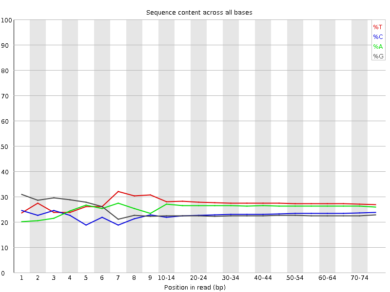
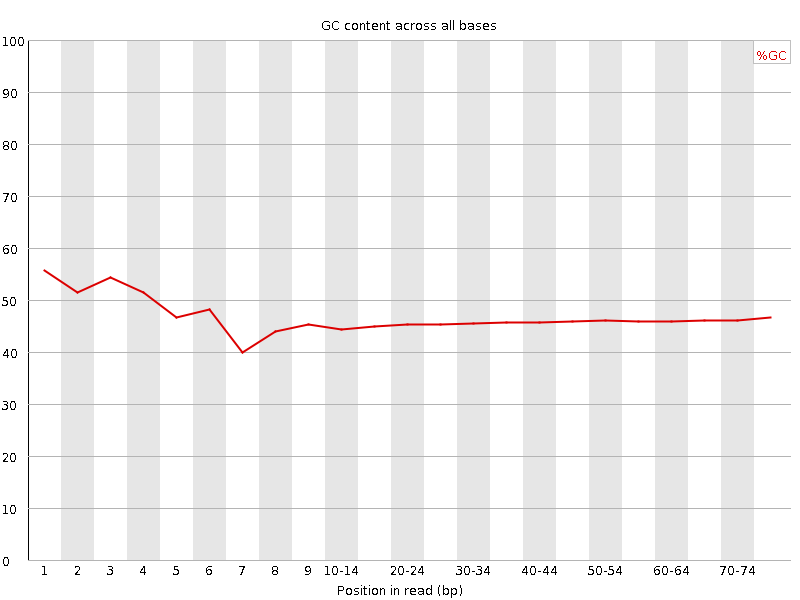
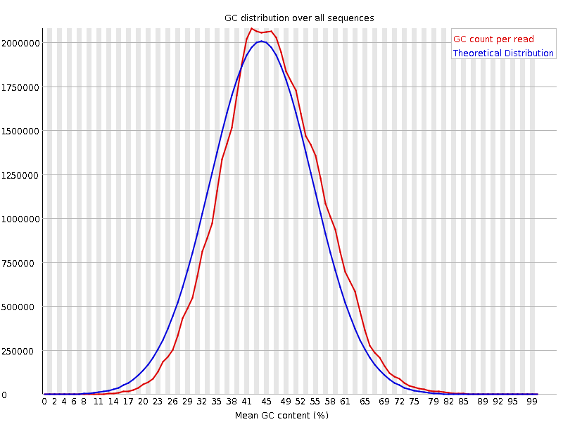
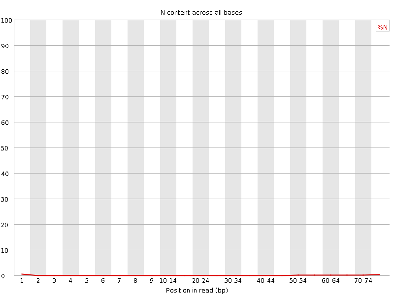
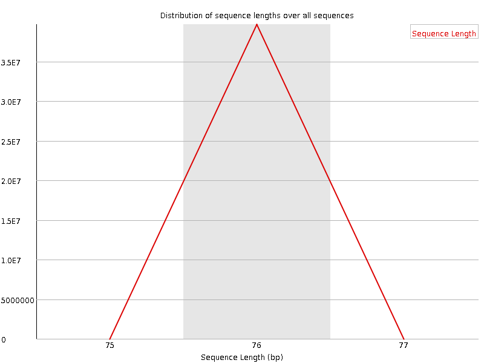
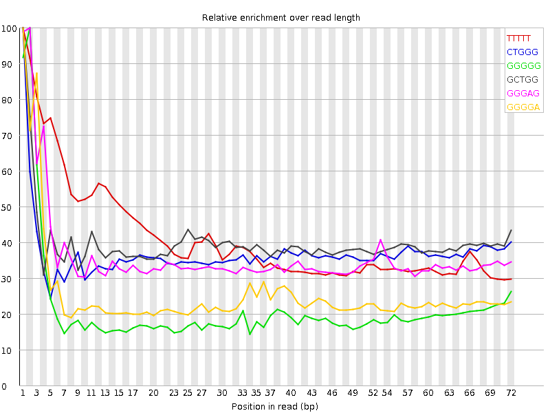

![[OK]](Icons/tick.png) Basic Statistics
Basic Statistics
| Measure | Value |
|---|---|
| Filename | SRR307908_1.fastq |
| File type | Conventional base calls |
| Encoding | Sanger / Illumina 1.9 |
| Total Sequences | 39656813 |
| Filtered Sequences | 0 |
| Sequence length | 76 |
| %GC | 46 |
Per base sequence quality

Per sequence quality scores

![[WARN]](Icons/warning.png) Per base sequence content
Per base sequence content

Per base GC content

Per sequence GC content

Per base N content

Sequence Length Distribution

![[FAIL]](Icons/error.png) Sequence Duplication Levels
Sequence Duplication Levels

Overrepresented sequences
No overrepresented sequences
Kmer Content

| Sequence | Count | Obs/Exp Overall | Obs/Exp Max | Max Obs/Exp Position |
|---|---|---|---|---|
| TTTTT | 11542020 | 2.528371 | 6.123985 | 1 |
| CTGGG | 4800425 | 2.1525745 | 5.8420615 | 1 |
| GGGGG | 3982975 | 2.1355293 | 10.064934 | 2 |
| GCTGG | 4448695 | 1.9948542 | 5.0117435 | 1 |
| GGGAG | 3964615 | 1.8682607 | 5.1755652 | 2 |
| GGGGA | 3882885 | 1.8297468 | 7.1772294 | 1 |
| TGGGG | 4059310 | 1.8197107 | 6.3475213 | 1 |
| GGGGC | 3064455 | 1.6435374 | 5.6978817 | 2 |
| GGGTG | 3620950 | 1.6232024 | 5.1081023 | 2 |
| GTGGG | 3577285 | 1.6036282 | 6.870592 | 1 |
| GGGGT | 3511000 | 1.573914 | 7.0989194 | 3 |
| CGGGG | 2225280 | 1.1934686 | 8.553526 | 1 |
| GCGGG | 1538675 | 0.8252266 | 5.396011 | 1 |